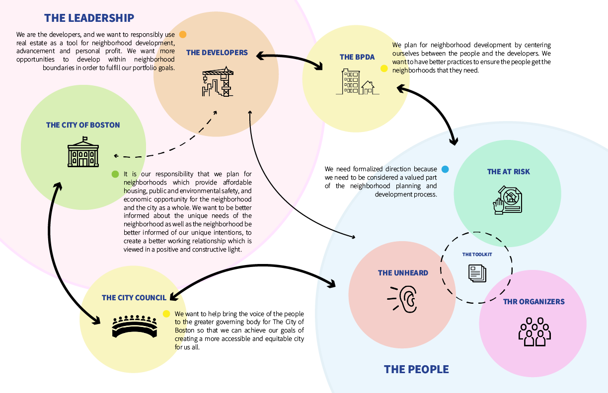

The future for Equitable and Accessible Community Engagement Practices
Community Engagement in East Boston

A crucial part of the toolkit it to create a revolutionary plan to recreate how the public interacts and
learns from their city planning practices.
The goal of this research is to produce a new toolkit, combining both digital and physical engagement
strategies, which can be used by public and private sectors to improve outreach numbers, promote diversity,
and to ensure an equitable and accessible community engagement and planning process. This toolkit will be
comprised of four separate sections; a guide for data collection and visualization which can be used to create
community wide success and opportunity metrics, suggestions for existing or proposed new software and
technology solutions to promote a more accessible form of engagement, a variety of instructive yet interesting
educational materials to help teach the public about the planning process, and suggestions for entertaining
methods of engagement to increase the likelihood of participation.
Community engagement typically plays one of the most crucial roles in the neighborhood planning process as
planners and developers use feedback from the community to determine how to best plan and develop new policies
and physical spaces tailored to the unique needs of the community. A planning process which is conduced well
considers the need of all residents, businesses, and industries of an existing neighborhood and works with these
groups to create a space which benefits all equally. However, the current engagement strategies which are
deployed by planners and developers are naturally flawed and onducted without providing proper
resources and opportunity to everyone in the neighborhood. As a result, the policy and development of our
neighborhoods are tailored to the few who have the accessibility and opportunity to engage while the majority
have their needs ignored. It is our responsibility, as architects, planners, and designers, to ensure that we
work in the best interest of everyone involved.
In East Boston, community engagement methods, which
have been mostly unchanged for decades, have historically and consistently resulted in planning studies
that have failed to gather the widespread and diverse engagement needed to make decisions based on the
neighborhoods best interest. Language barriers, time constraints, complex information and travel requirements
are just a part of a combination of obstacles which create an existing engagement process which is inequitable
and inaccessible to many members of the community.